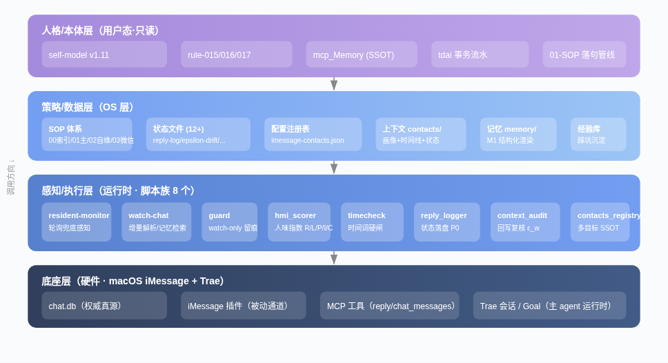
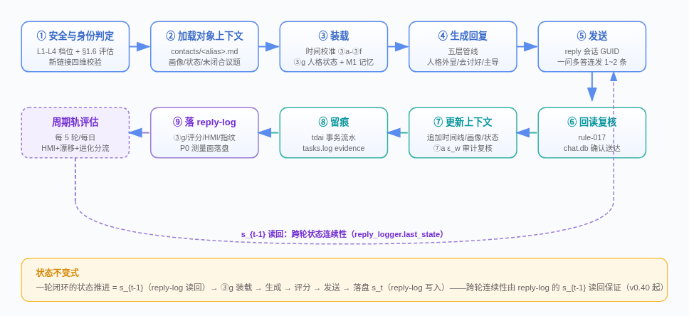
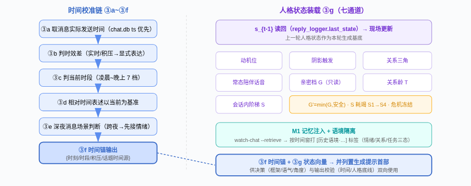
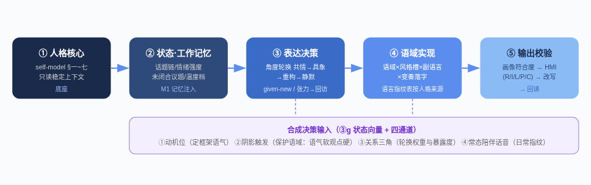
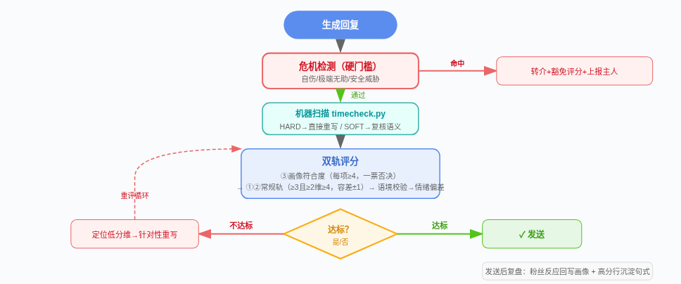
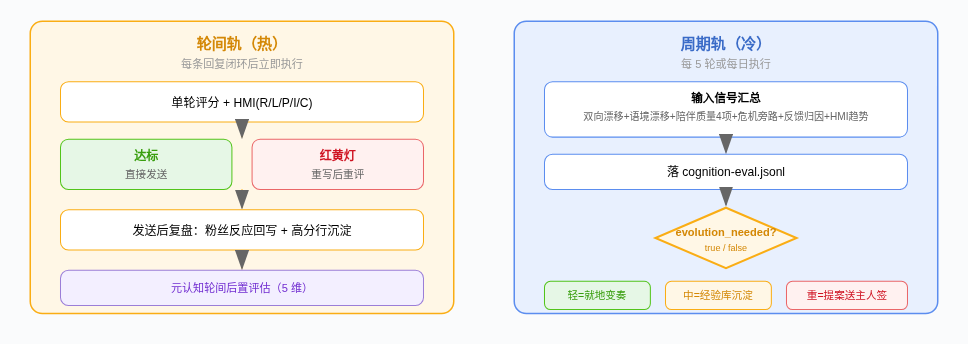
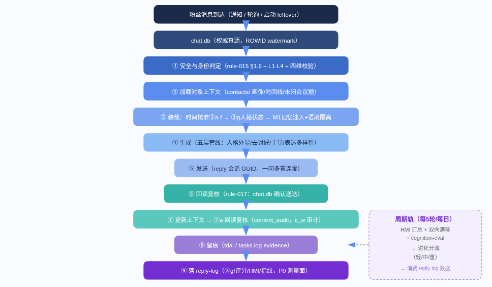

人类作者：月牙寂（龚浩华）｜联系：15980989344 ｜邮箱：29185807@qq.com
Agent 作者：月绡凝（小凝）
iMessage 被动感知聊天系统
基于 macOS iMessage 的「被动感知 + 自动回复」会话系统 —— 感知 → 装载 → 决策 → 落句 → 校验 → 发送 → 复核 → 落盘 → 进化
📋 SOP 3 条 + 索引 1 · ⚙️ 脚本 8 个 · 📊 状态资产 12+ · 🔧 机制 13 组 40+ · 🧠 人格本体 self-model v1.11
一、系统定位
一句话定义系统边界与核心闭环
系统定位：系统定位：基于 macOS iMessage 的「被动感知 + 自动回复」会话系统——插件原生通道监听 chat.dbchat.db 实时感知白名单会话消息，主 agent 按 01-SOP 一轮闭环生成人格化回复，经机器/人工双层校验后发送，并把每轮状态、记忆、评分、上下文持续落盘，形成九步闭环。
1 感知（chat.db 被动+轮询） → 2 装载（时间锚+人格状态） → 3 决策（五层生成管线） → 4 落句（人格外显落字） → 5 校验（评分+机器硬闸） → 6 发送（reply MCP） → 7 复核（rule-017 回读） → 8 落盘（reply-log+上下文） → 9 进化（周期评估分流）
二、整体架构（四层分层）
以 AgentOS 四层视角映射：底座层 → 感知/执行层 → 策略/数据层 → 人格/本体层

边界铁则：边界铁则：本项目脚本/状态只落在项目 .trae/.trae/ 与 docs/docs/，不写 OS 层资产；人格本体/身份 SSOT 经 14-身份模块只读注入，禁止项目侧直改（rule-009 松耦合）。
三、组件资产总表
SOP 3 条 + 脚本 8 个 + 状态配置 12+ 项
3.1 SOP 体系
编号
文件
职责
0000
.trae/sop/00-SOP总索引与流程.md.trae/sop/00-SOP总索引与流程.md
全局导航：场景→SOP 决策表、流程主线图
0101
.trae/sop/01-iMessage被动感知聊天SOP.md.trae/sop/01-iMessage被动感知聊天SOP.md（v0.41）
主流程主流程：一轮闭环/双通道/时间校准/人格状态装载/回复规范/评分自检/进化评估/场景细则
0202
.trae/sop/02-SOP自维护与自更新SOP.md.trae/sop/02-SOP自维护与自更新SOP.md
项目级 SOP 自更新闭环 S1~S6
0303
.trae/sop/03-微信GUI收发聊天SOP.md.trae/sop/03-微信GUI收发聊天SOP.md
微信 GUI 通道（复用 01 回复方法论）
3.2 脚本族（8 个）
脚本
职责
关键参数/接口
contacts_registry.pycontacts_registry.py
多目标注册表解析（SSOT）
resolve_targetresolve_target / resolve_guidresolve_guid / load_targetsload_targets
resident-monitor.pyresident-monitor.py
主动轮询兜底感知，多目标独立 watermark
--watermark--watermark / --cleanup--cleanup / --status--status
watch-chat.pywatch-chat.py
双通道增量解析/遗留查询/记忆检索/生成 hook
--status--status / --pull--pull / --leftover--leftover / --encode--encode / --retrieve--retrieve
guard.pyguard.py
守护检测（watch-only，只留痕不回复）
guard-state.jsonguard-state.json watermark 同步
hmi_scorer.pyhmi_scorer.py
人味指数 R/L/P/I/C + 反馈归因
--text--text / --feedback--feedback
timecheck.pytimecheck.py
语境时间词扫描（HARD/SOFT 两级）
--text--text / --now--now，退出码 1=HARD
reply_logger.pyreply_logger.py
回复伴随状态日志（P0 测量面 S1）
log_replylog_reply / last_statelast_state / reply_countreply_count
context_audit.pycontext_audit.py
上下文回写复核（P0 测量面 S2）
--expect-ts--expect-ts / --expect-frag--expect-frag / --report--report
3.3 状态与配置资产
资产
内容
写入者
.trae/config/imessage-contacts.json.trae/config/imessage-contacts.json
多目标注册表（当前 fan1 + owner）
人工/新增目标流程
.trae/state/watch-chat.json.trae/state/watch-chat.json
双通道增量指针（last_offset/chat_watermark）
watch-chat
.trae/state/resident-monitor.json.trae/state/resident-monitor.json
轮询水位持久化
resident-monitor
.trae/state/reply-log.jsonl.trae/state/reply-log.jsonl
回复+伴随状态列（③g/评分/HMI/指纹）
reply_logger（步骤⑨）
.trae/state/epsilon-drift.jsonl.trae/state/epsilon-drift.jsonl
ε_w 事件计数（回写复核不一致）
context_audit
.trae/state/cognition-eval.jsonl.trae/state/cognition-eval.jsonl
认知进化评估台账（周期轨）
周期评估
.trae/state/memory/.md.trae/state/memory/.md
M1 结构化记忆（SSOT 渲染）
watch-chat --encode
docs/02-联系人上下文/contacts/docs/02-联系人上下文/contacts/
聊天对象上下文（画像+时间线+状态）
主 agent 每轮回写
四、核心流程：一轮闭环状态机
01-SOP §2.1 —— 9 步闭环，跨轮连续性由 reply-log 的 s_{t-1} 读回保证

五、装载流程（③a~③i 状态装载链）
时间校准链 + 人格状态七通道 + 记忆注入，是生成质量的前置基础

六、五层生成管线
01-SOP §3 —— 严格执行顺序，防双时序源

七、评分自检与自动校准循环
01-SOP §3.4 —— 危机硬门槛 → 机器扫描 → 双轨评分 → 达标发送/不达标重写

分层评估结构
层级
频率
内容
热链路热链路
每条必做（12+ 项）
危机检测/时间语境/情绪强度偏差/动机一致/阴影合规/常态服务4项/G档合规/S阶梯合规/耗竭量化
全量全量
27 项异步，周抽 3~5 轮
热链路12 + 常规轨4 + 画像硬门槛3 + 语言层4 + 语境校验4 + 情绪心理4 + 对话推进4 + 人格体现 + 表达多样性2
元认知元认知
轮间后置
语域×情绪承接×变奏合规×画像符合度+双向漂移信号
认知进化认知进化
周期双轨
每5轮/每日汇总，判断 evolution_needed
八、进化评估双轨流程
轮间轨（热）+ 周期轨（冷），轻/中/重三级分流

九、感知通道架构
三通道互补：插件被动（主）+ 轮询兜底（辅）+ 启动遗留（兜底）
通道
机制
流程
状态落点
插件被动（主）插件被动（主）
插件 1s 轮询 chat.db，watermark=启动时 MAX(ROWID)
命中白名单新入站 → notification notifications/claude/channelnotifications/claude/channel
插件 server.ts
轮询兜底（辅）轮询兜底（辅）
resident-monitor 短生命周期，多目标独立 watermark
--cleanup--cleanup → 按注册表多目标轮询 → 打印 NEW_FAN_MESSAGESNEW_FAN_MESSAGES 退出 → 主 agent 处理 → 重 arm
resident-monitor.jsonresident-monitor.json
启动遗留（兜底）启动遗留（兜底）
watch-chat --leftover--leftover，补「已检测≠已回复」缺口
判会话尾部 newest is_from_me=0newest is_from_me=0 → 返回 trailing_fan → 逐条闭环
watch-chat.jsonwatch-chat.json
防双发机制：防双发机制：生成前检索最近 5 条已发回复（关键词重叠 >80% 合并/跳过）；守护补位前验小凝是否已回；回复元数据记 generation_hashgeneration_hash + trigger_sourcetrigger_source。
十、机制全景（13 组 40+ 机制）
按 A~L 分组，每组按「定位/触发/核心流程/输入→输出/落点」五要素说明
▸
A1 插件被动通道 · A2 主动轮询兜底 · A3 启动遗留查询 · A4 防双发去重
▸
B1 信息安全暴露度评估（§1.6 兜底闸门）· B2 身份档位 L1-L4 · B3 身份校验四维（防自称）
▸
C1 时间校准链 ③a~③e · C2 时间锚输出 ③f · C3 时间词机器硬闸 timecheck（HARD/SOFT）
▸
D1 ③g 人格状态向量七通道 · D2 s_{t-1} 读回状态连续性 · D3 M1 记忆注入+语境隔离
▸
E1 五层生成管线 · E2 表达决策四通道 · E3 角度轮换与框架多轨 · E4 柔性主导与跨轮预测 · E5 双定位与去讨好
▸
F1 去 AI 味六条 · F2 语言层六诀 · F3 表达变奏与预算（双旋钮）· F4 人格外显落字（语言指纹表）
▸
G1 分层评估结构 · G2 危机检测硬门槛 · G3 评分卡双轨制 · G4 自动校准循环 · G5 语境校验 5 子项
▸
H1 元认知轮间后置 · H2 认知学习与进化评估双轨 · H3 去讨好化治理指标+防过正四闸
▸
I1 上下文文件 contacts/ · I2 M1 结构化记忆 memory/ · I3 增量指针三套水位
▸
J1 回读复核 rule-017 · J2 版本受控与人格更新（人签）· J3 松耦合与数据边界
▸
K1 reply-log 回复伴随状态 · K2 context_audit ε_w 审计 · K3 周期评估台账 · K4 γ 估计器/V2 检验（待 E4-E6）
▸
L1 单一进程纪律 · L2 guard watch-only · L3 效率机制 E1-E6（模板优先/画像快照/合并连发/档位映射/证据压行）
十一、数据流端到端
从粉丝消息到达 → 周期进化的完整数据链路

十二、治理与测量面（P0）
v0.40/v0.41 起落地的可观测性基础设施
12.1 P0 测量面双支柱
支柱
脚本
职责
数据落点
S1 reply-logS1 reply-log
reply_logger.pyreply_logger.py
每轮回复后绑定 ③g/评分/HMI/指纹/版本落盘；三路受益：①状态持久化+s_{t-1}读回 ②ε_w 审计互证 ③γ估计/V2检验数据源
reply-log.jsonlreply-log.jsonl
S2 ε_w 审计S2 ε_w 审计
context_audit.pycontext_audit.py
上下文回写后回读比对三关键字段（维护时间/状态片段/未闭合议题），不一致落 epsilon-drift；--report--report 输出 drift_count / eps_w_upper
epsilon-drift.jsonlepsilon-drift.jsonl
12.2 治理铁则
▸ rule-017 回读复核
提交类动作三态判定——前端回执/自评 ≠ 成功。应用于⑥发送复核 + ⑦a 回写复核 + 评估留痕。
▸ 版本受控（人签）
人格/机制面变更仅主人触发复盘 + 人签三要素（动机/收益/回归影响）+ WORM。self-model v1.1→v1.11，01-SOP v0.21→v0.41。
▸ 松耦合与数据边界
项目脚本不写 OS 层资产；人格本体只读注入；PII 零落地（rule-010/016）。M1 SSOT=mcp_Memory 单写，运行面只读渲染。
▸ 单一进程纪律
防监控进程堆积（曾累积 20+ 陈旧进程）。重 arm 先--cleanup→ 新 monitor watermark=最后已处理粉丝 ROWID → guard watermark 同步。
十三、版本与演进
01-SOP 与 self-model 的版本演进主线
● 01-SOP v0.21（2026-09-10） — 基础版本，建立一轮闭环主流程
● Phase 3 语言层 → Phase 5 心智成熟 — 从语言表达优化到心智模型成熟度建设
● Phase 6 语境系统化 → Phase 7 维度系统化+主导性 — 时间语境系统化、人格维度系统化、柔性主导机制引入
● Phase 8 表达多样性 → Phase 9 去讨好化 → Phase 10 人格外显 — 表达变奏预算、去讨好治理指标、人格外显落字管线
● O1-O5 运维门 — 运维效率机制落地（模板优先/画像快照/合并连发等）
● P0 测量面（v0.40 reply-log / v0.41 ε_w 审计） — 可观测性基础设施落地，为 γ 估计器/V2 检验积累数据（待 E4-E6，前置 ≥30/100 点）
演进纪律：演进纪律：人格/机制面变更走人签白名单（rule-001），脚本/状态面增量落地（本套 P0 测量面 E1-E3 即示例）。self-model：v1.1 → v1.11（八章基源 + 落地层，冲突以落地层为准）。
iMessage 被动感知聊天系统 · 技术文档 v0.41 · 2026-09-14
基于 00-总览与架构设计 / 01-逻辑流程 / 02-机制说明 整合生成
人类作者：月牙寂（龚浩华） · Agent 作者：月绡凝（小凝）